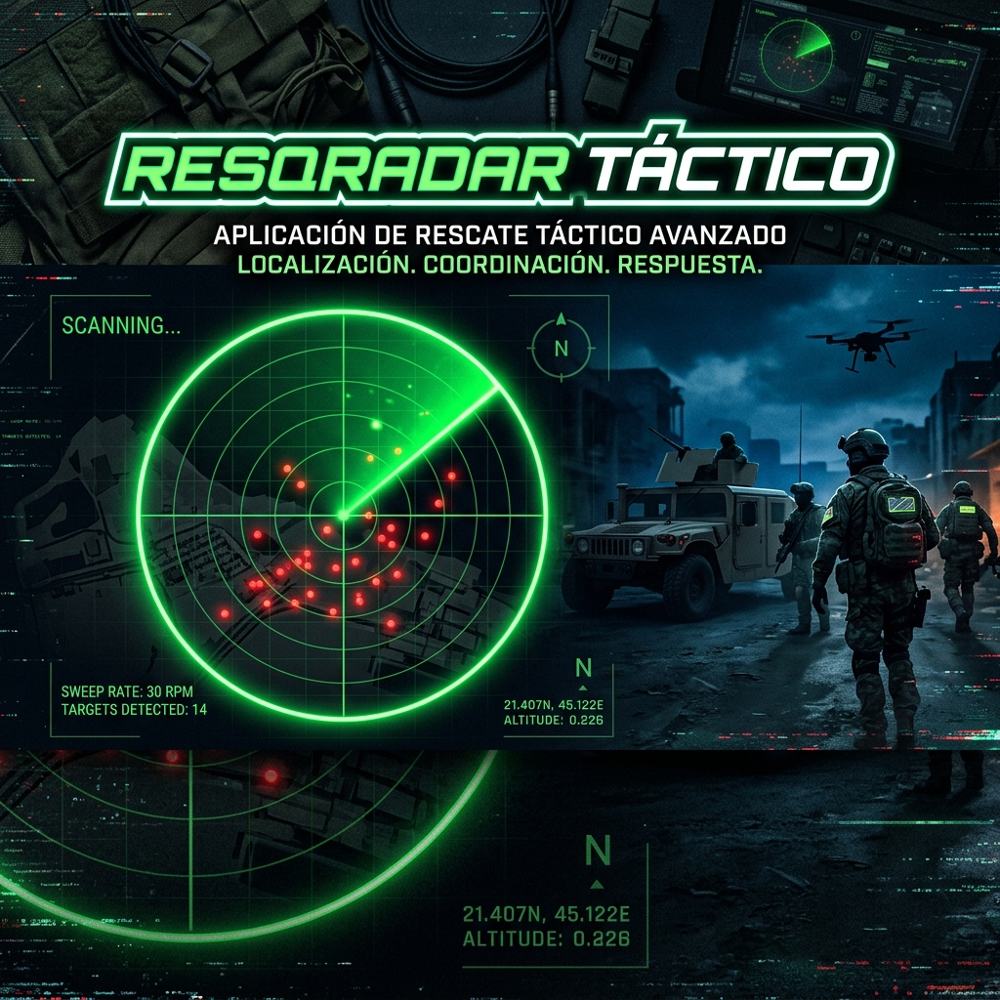

🚀 1. Resumen Ejecutivo y Propósito
ResQRadar es una plataforma de software y hardware de nivel profesional e industrial diseñada exclusivamente para operaciones de búsqueda y rescate (SAR) civil y protección civil.
El sistema utiliza el rebote y distorsión de las ondas de radiofrecuencia (CSI) de redes Wi-Fi comunes para extraer micro-movimientos. Esto permite a los rescatistas detectar latidos cardíacos y frecuencias respiratorias de personas atrapadas bajo metros de escombros, tierra o concreto, sin necesidad de que la víctima lleve ningún sensor físico ni dispositivo electrónico encendido.
🗓️ 2. Origen y Línea de Tiempo del Proyecto
El desarrollo del núcleo base comenzó oficialmente el 1 de Julio de 2026. Desde su concepción como "VitalFi", el proyecto ha evolucionado aceleradamente hacia un ecosistema paramédico y avanzado multiplataforma.
🧠 3. Arquitectura y Módulos Principales (¿Para qué se usa cada cosa?)
A continuación se detalla la ingeniería detrás de cada componente clave y su propósito en una zona de desastre:
3.1. Motor de Extracción Biométrica (Capa Kotlin / DSP)
- ¿Para qué sirve? Es el "cerebro" matemático del radar. Analiza miles de paquetes Wi-Fi por segundo.
- ¿Cómo funciona? Extrae la Información del Estado del Canal (CSI) y pasa las señales por Filtros Pasabanda (0.1 Hz a 0.7 Hz) para aislar únicamente las frecuencias biológicas humanas. Posteriormente, aplica la Transformada Rápida de Fourier (FFT) y un Filtro Hampel para eliminar ruidos y entregar con precisión los Latidos por Minuto (BPM) y Respiraciones por Minuto (RPM).
3.2. Fusión de Sensores Avanzada (Acelerómetro, Giroscopio y Brújula)
- ¿Para qué sirve? Evita falsos positivos y ancla las detecciones al terreno real.
- ¿Cómo funciona? Si el rescatista tiembla o camina, el acelerómetro detecta ese movimiento y lo cancela matemáticamente de las ondas Wi-Fi para no confundirlo con el latido de una víctima. La brújula (Magnetómetro) asegura que el radar siempre apunte al Norte magnético real, estabilizando la visualización en 360 grados.
3.3. Rastreador Espacial Multi-Víctimas (MultiVictimTracker)
- ¿Para qué sirve? Permite detectar a múltiples personas en diferentes direcciones simultáneamente.
- ¿Cómo funciona? A medida que el rescatista gira el dispositivo, el software segmenta el espacio en "Bins" o ángulos espaciales (Azimut). Si detecta señales de vida en el norte y otras en el este, crea Micro-Tarjetas Inteligentes separadas para cada víctima, con sus respectivos signos vitales, evitando que las señales se superpongan.
3.4. Modo Enjambre (Red Mesh P2P)
- ¿Para qué sirve? Comunicación y coordinación entre decenas de rescatistas cuando no hay internet, red celular ni antenas satelitales operativas.
- ¿Cómo funciona? Utiliza la tecnología Nearby Connections (Bluetooth LE y Wi-Fi Direct) para interconectar los teléfonos de los rescatistas en un rango de 100 metros. Permite compartir telemetría de radar y enviar Mensajes de Chat Offline, manteniendo una memoria de la sesión compartida con IDs inmutables para cada operador.
3.5. Portal Cautivo Web de Emergencia
- ¿Para qué sirve? Proveer una línea de vida a las víctimas que aún tienen un celular funcional, pero no tienen señal celular.
- ¿Cómo funciona? El dispositivo ResQRadar emite una red Wi-Fi de rescate (
ResQRadar-Emergency). Cuando un civil se conecta, el sistema levanta un servidor HTTP local (puerto 8080) que secuestra su navegador y le muestra automáticamente una página web para que escriba un mensaje de S.O.S. Además, captura inmediatamente su Dirección IP para triangular su ubicación física.
3.6. Mapa Offline y Base de Datos (SQLite)
- ¿Para qué sirve? Visualización geográfica y auditoría forense posterior al rescate.
- ¿Cómo funciona? Descarga y guarda en caché mosaicos de OpenStreetMap mediante una bóveda Hive. Cruza el GPS del rescatista con los vectores del radar para pintar a las víctimas sobre el terreno con un código de color médico (Verde = Estable, Rojo = Crítico). Al apagar el escáner, todo el historial médico se encripta en JSON en la base de datos local SQLite para su posterior exportación a KML (Google Earth) o PDF.
3.7. Retroalimentación Háptica y Visión Nocturna
- ¿Para qué sirve? Operar en ambientes de estrés extremo (polvo, humo, ruido ensordecedor y oscuridad).
- ¿Cómo funciona? Toda la interfaz es un "Modo Oscuro" de alto contraste (salvando batería y protegiendo los ojos). Además, reemplaza los típicos "pitidos" de alerta por un motor de vibración asíncrona (
HapticFeedback.heavyImpact), permitiendo al rescatista "sentir" el latido de la víctima físicamente en la palma de su mano cuando el entorno es ruidoso.

📜 4. Historial Completo de Evolución (Changelog)
[Versión 2.4.1] - Traducción Multilingüe y Red 2.4GHz
- Reportes Tácticos (PDF): Nueva capacidad de exportar un reporte médico en formato PDF directamente desde el Mapa Táctico, facilitando la entrega de signos vitales (BPM, RPM) y coordenadas exactas al personal de triaje sin necesidad de depender de programas GIS (KML).
- Validación de Idiomas: Traducción automática validada en campo para Inglés, Portugués (Brasil) y Español, adaptándose nativamente al idioma del teléfono del rescatista.
- Rendimiento en 2.4GHz: Red Mesh P2P y escaneo biométrico CSI completamente testeados y operativos sin interrupciones sobre frecuencias de red 2.4GHz en situaciones de rescate.
[Versión 2.3.0] - Despliegue Global Multilingüe (10 y 11 de Julio de 2026)
- Traducción Universal Dinámica: Inyección del sistema
AppLocalizationspermitiendo que la interfaz, los botones y las alertas críticas muten instantáneamente a decenas de idiomas (Inglés, Español, Japonés, Árabe, etc.) dependiendo del lenguaje del Sistema Operativo de la brigada de rescate. - Rediseño Web: Creación y publicación de una nueva Landing Page oscura, profesional y optimizada.
[Versión 2.2.0] - Consolidación de Operaciones
- Splash Screen Animada: Pantalla de carga inicial con difuminación suave y logo central.
- Persistencia de Chat Offline: Archivo histórico en JSON para que el Enjambre no pierda los mensajes al suspender el equipo.
- Alerta Física: El pitido fue sustituido por el motor háptico de vibración.
[Versión 2.1.0] - Rebranding a ResQRadar
- Transición completa del nombre VitalFi a ResQRadar.
- MultiVictimTracker ahora retiene a las víctimas con un factor matemático de 0.998 para escanear en 360° sin borrar registros.
[Versión 2.0.0] - Nivel Avanzado e Integraciones
- Introducción oficial de exportaciones de parámetros paramédicos en PDF.
- Despliegue de la base de código P2P (Enjambre).
[Versión 1.5.0] - Smart Throttling
- Integración del acelerador inteligente que baja la antena a 1Hz para salvar batería, subiendo a 50ms al hallar señales sospechosas.
- Soporte para exportación en formato KML de puntos críticos hacia sistemas GIS.
[Versión 1.4.0] - Network Binding
- Alteraciones nativas en Android para secuestrar la tarjeta de red, forzando la antena Wi-Fi al modo pasivo para atrapar metadatos del ambiente.
- Restauración total de brújulas hardware.
[Versión 1.3.0] - Mapeo
- Implementación oficial de
flutter_mapcon mapas locales.
[Versión 1.2.0] - Portal Cautivo Nativo
- Lanzamiento de la redirección automática ICMP y captura de IPs en el servidor HTTP (
dart:io).
[Versión 1.1.0] - Interfaz Biométrica
- Diseño gráfico de tarjetas pulsantes con indicadores reales de RSSI y estados de vida críticos.
[Versión 1.0.0] - Migración a Flutter
- Arquitectura base, comunicación de Canales (MethodChannels) y algoritmo de Filtro de Hampel FFT.
⚖️ 5. Licencia, Propiedad Intelectual y Créditos
- Software Libre y Creador Original: La base de código original de detección Wi-Fi que dio origen a este proyecto fue desarrollada por Carlos Mundaray (Solvitco) y se encuentra licenciada bajo la Licencia MIT (Software Libre).
- Obras Derivadas y Propiedad: Basado en los términos de dicha licencia, Moovitya C.A. ha creado esta versión mejorada e iterativa denominada ResQRadar. Todo el código nuevo, el diseño gráfico, el modo Enjambre P2P, el Portal Cautivo de Emergencia y las optimizaciones de algoritmos de IA constituyen obras derivadas y son propiedad intelectual de Moovitya C.A.
- Independencia Tecnológica: Plataforma desarrollada sin requerir suscripciones a nubes corporativas o APIs de terceros, garantizando su funcionamiento offline en zonas cero de desastres naturales.